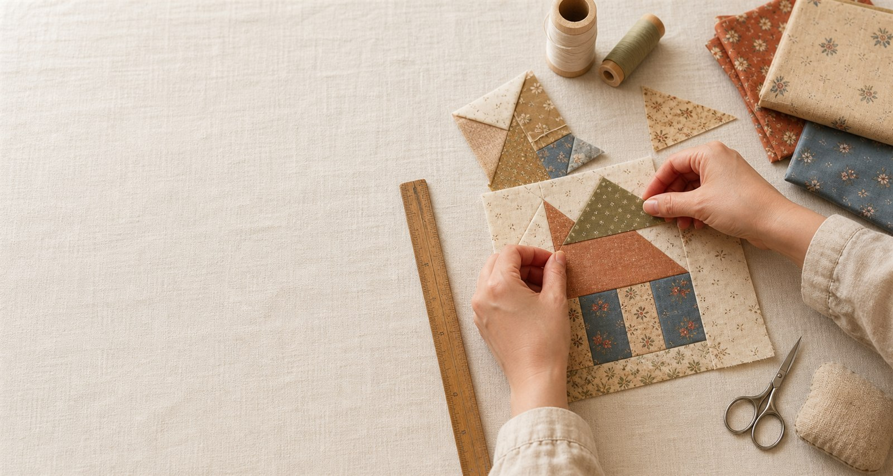

小班制指導
保留個別觀察、示範與調整的空間。
零基礎友善・小班實作
小班制拼布與生活布作課程，從零開始，也能親手完成屬於自己的作品。

ABOUT THE STUDIO
暖線以成人初學者的節奏規劃課程。從認識布料、工具使用到實際縫製，每一堂都以「能理解、能練習、能完成」為核心。
適合想放慢腳步、培養一項安靜興趣，或想親手做一份有溫度禮物的你。不需要先會畫圖，也不用擔心手不巧，我們會把複雜步驟拆成清楚的小段。
COURSES
課程依程度與目標安排，費用與可預約時段請於正式品牌資料串接後洽詢。
SELECTED WORKS
以下為示範作品分類，以自製布料圖形呈現；正式網站可直接替換為品牌實拍照片。
WHO IT’S FOR
這裡不追求大量進度，而是讓每一位學員有餘裕看懂步驟、提出問題，並享受作品慢慢成形的過程。
HOW IT WORKS
不確定從哪堂開始也沒關係，正式網站串接後可先用 LINE 說說你的經驗與想做的作品。
先從課程內容與適合對象找到方向。
說明經驗與可配合的時段。
收到上課時間、材料與行前提醒。
依步驟實作，把作品與經驗一起帶走。
TEACHING DETAILS
課程設計把每一個容易卡住的地方先想在前面，讓你把注意力留給手上的布與當下的練習。
保留個別觀察、示範與調整的空間。
從工具、布料方向與基本手勢開始。
課前說明攜帶物與可提供的材料內容。
每個觀念都回到實際裁切與縫製練習。
以能完成一件實用作品為課程目標。
正式服務可依品牌方式串接課後提問。
LEARNING EXPERIENCE
以下為課程頁可呈現的情境文案，不是具名客戶評價，也不代表實際學員見證。
「不需要趕進度，有看不懂的地方可以停下來再示範一次，初學也不會有壓力。」
清楚、安心的學習節奏「從一塊塊布開始，到最後真的做出能用的東西，完成的那一刻很有成就感。」
看得見的作品成果「材料、步驟和工具都有事先說明，可以專心享受手作，不必一直擔心漏了什麼。」
有準備、無負擔的體驗FAQ
正式網站可依工作室的實際上課方式、材料規則與時段更新答案。
BOOK A CLASS
正式合作後，這裡會串接品牌的 LINE、電話或表單。現在為示範模式，不會收集、儲存或傳送任何訪客資料。